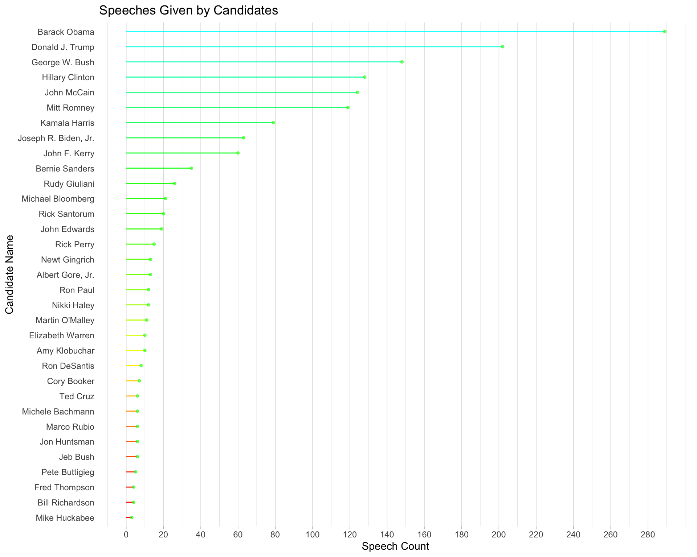
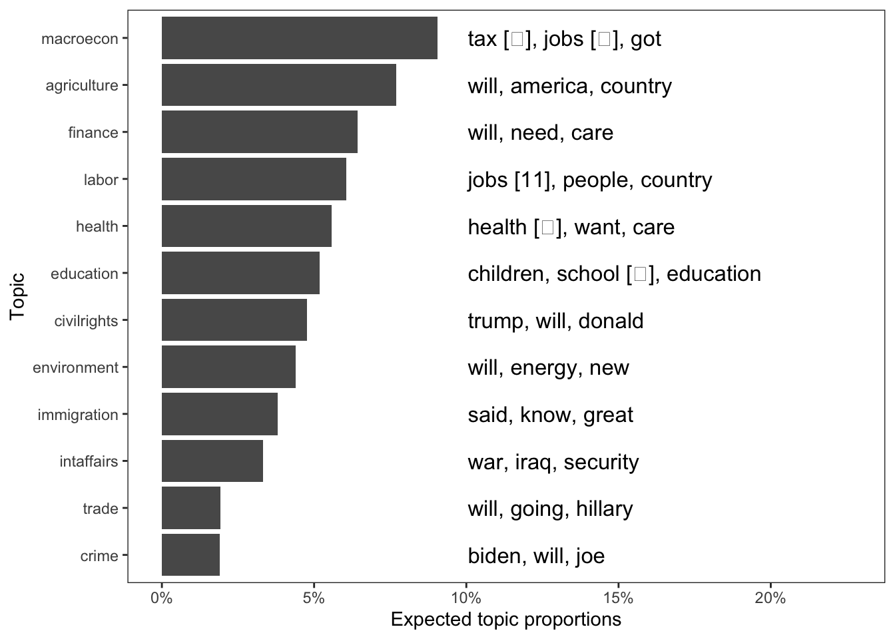
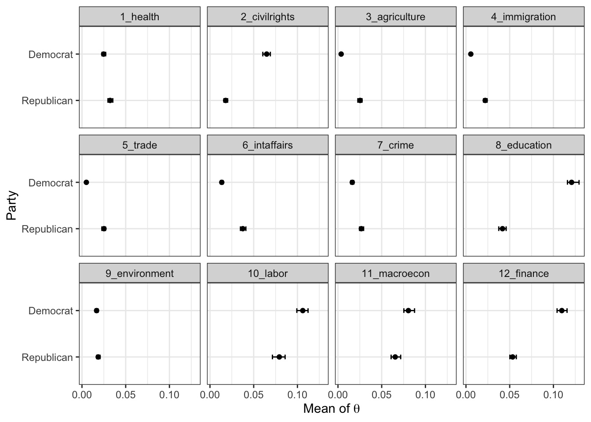
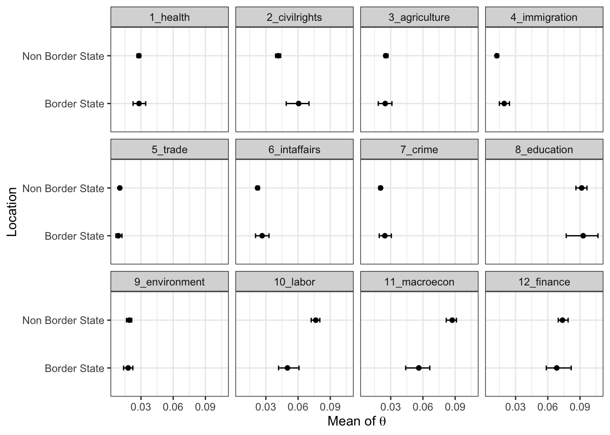
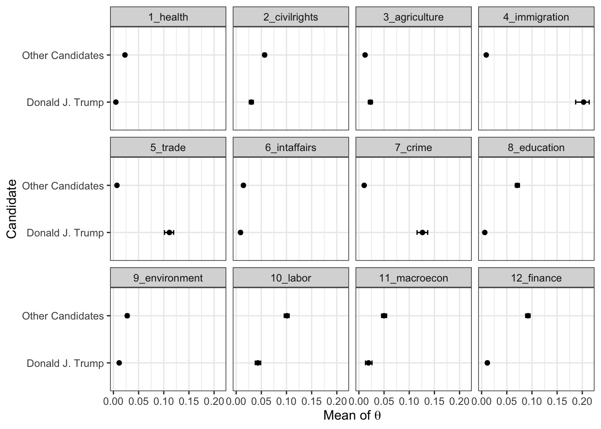
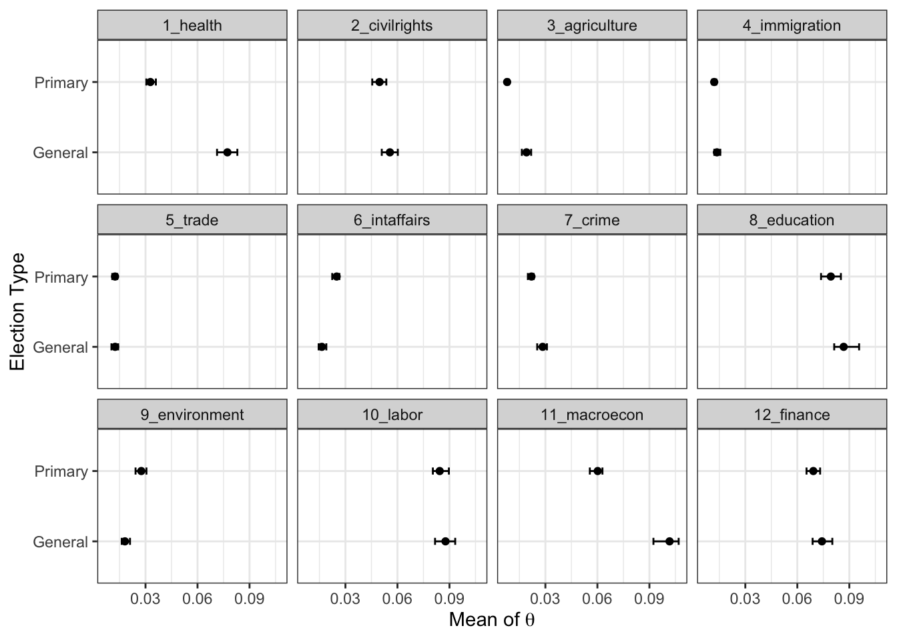

![]()

Fear and Loathing on the Campaign Trails - A Textual Analysis of Presidential Campaign Speeches
In Progress
Abstract
Presidential candidates strategically craft their speeches to align their policy preferences with the perceived priorities of diverse audiences. While journalistic accounts have provided qualitative insights into candidates’ strategies, no quantitative study has systematically examined campaign speeches across multiple elections. This study analyzes a corpus of U.S. presidential campaign speeches from 1999 to 2024, focusing on 12 policy topics through a keyword-assisted topic model (keyATM). The analysis reveals significant variation in the topics candidates emphasize across multiple theoretical dimensions. A multinomial logit model is then employed to identify the most influential factor in shaping topic emphasis. I find party identification to be the strongest predictor of which topics are discussed. These findings deepen our historical understanding of presidential campaigns and provide critical insights into the policy priorities of Democratic and Republican candidates. This work motivates future research between candidate communication and voter preferences.
Keywords
Campaign, Presidential, Topic Analysis, Election
Introduction
But Lindsay seems almost suicidally frank at times; he will spend two hours on a stage, dutifully haranguing a crowd about whatever topic his speechwriters have laid out for him that day… and thirty minutes later he will sit down with a beer and say something that no politician in his right mind would normally dare to stay in the presence of journalists. - Fear and Loathing on the Campaign Trail ’72, Hunter S. Thompson
Presidential hopefuls jockey between each other in an effort to court attention and ultimately, voters to their campaign. This process plays out over many months where candidates travel up and down the United States interacting with different voters. As the quote from Hunter S. Thompson exemplifies, strategic candidates carefully craft their speeches to maximize their chances of getting elected while also staying true (as close as possible) to their own personal policy preferences. It is through campaign speeches, candidates attempt to match their policy preferences with the policy preferences of their respective audience. These speeches are the primary communication in which candidates attempt to publicize and codify their policy preferences.
Similar to Thompson in 1972, journalists will follow candidates, characterizing their speeches, behavior, appeal, and policy goals if elected president. Journalist on this beat attempt define the candidate politically. What is the candidates main goal? What subset of voters are they trying to capture? Where does the candidate land on fracking? How is the candidate doing in relation to X candidate? These journalistic accounts generally report the candidates from a ‘horse race’ perspective, providing insight into the strategies of the candidates and what is working/what is not (Gelman and King (1993)).
Campaign speeches being the primary method for candidates to communicate their message to voters, provides valuable insight into what candidates perceive to be the most important issues for voters. Despite qualitative accounts from journalists, no known quantitative study has looked at campaign speeches across multiple elections and factors nor comprehensively compared what topics candidates focus on.
By studying the topics of campaign speeches, we gain a deeper understanding of what candidates think matter the most at different times and locations. Further, we can better characterize what each party values through the signals communicated by each party’s respective candidates. Descriptive knowledge of campaign speeches better will help provide a richer historical understanding of elections and help us learn what matters to different parties and voters from the perspective of the candidate.
Previous studies of campaigns, mostly look at evidence of a “campaign effect” - are campaigns important (Schmitt-Beck and Farrell (2003); Farrell and Schmitt-Beck (2003); Brady and Johnston (2009)). While important, this paper only looks at the campaign from the candidate perspective. This paper does not provide insight into how voters respond to the candidates, rather this paper helps us understand what factors motivate candidates to campaign the way they do.
This paper proceeds by first describing the role of campaign speeches and why modern candidates must participate in them. Second, I then use a keyword assisted topic model (keyATM) model across 12 defined policy topics to see how candidates vary across multiple dimensions in the topics they discuss through their campaign speeches. The corpus is sourced from The American Presidency project and includes all physical campaign speeches from every presidential candidate between 1999 - 2024. I provide theoretical justification for the various dimensions analyzed and how they might influence how candidates craft the speeches they do. After providing descriptive information of campaign speeches, I then reconfigure my data structure to estimate a multinomial logit model. While the descriptive information is interesting in its own right, I am curious about what factor is most influential in how candidates discuss policy topics. I find party identification to have the largest effect on what topics are discussed during campaign speeches. I finish with a brief explanation of my findings and further research goals.
Campaign Overview
All candidates have one goal: to get elected. Candidates are limited by time and resources and thus must be strategic about how best to mobilize voters in support of their campaign. Who to target and why, is thus a potent question for any serious candidate. Candidates must find an equilibrium point that maximizes their policy preferences with the policy preferences of voters for electoral viability. Given each candidate has their own unique worldview, how do presidential candidates decide what to talk about?
Compared to other communication forms such as advertisements, press releases, interviews, and debates; the content of campaign speeches provide a powerful vignette into this strategy. Other communication forms have more niche communication goals and are clouded by other factors. Press releases for example are more responsive to the dynamics of the campaign. Candidates may provide press releases to respond to events or other people, provide updates on the candidate, or provide general announcements. However, speeches require more resources to give and require the candidate to appear in front of an audience.
Speeches are one of the most important resource for a candidate as they provide the opportunity to directly engage with portions of their constituents and communicate their platform uninterrupted (Trent and Friedenberg (2008)). Contextual features may hold key insights into how candidates decide what to empasize. Specifically, what party the candidate is part of, the type of election, and the location of the speech may characterize how a candidate campaigns.
These factors shape candidates’ perceptual view of what matters to voters. While related to congress, Fenno (2003) provides a useful framework for how politicians perceive their constituency: the geographical constiuency, the relection constituency (the supporters), the primary constituency (the strongest supporters), and the personal constiuency (the intimates). Of course, presidential candidates differ in that they are the only office who has a potential constituency of everyone. However, their campaigns are still constrained by how they perceive what issues matter to each of these different constiuency blocs.
Presidential candidates are the only political office who’s constituency is the entire country. However, appealing to everyone is generally unwise and improbable. Campaign speeches are generally given in front of a self-selected audience. People that support the candidate the most are usually the ones that engage the most with the candidate. To only look speeches vis-a-vis the immediate physical audience would be a mistake. While a core constituency is important, the candidate must still mobilize voters outside of their strongest supporters for their campaign to win (Strömbäck and Kiousis (2014)). Thus, campaign speeches have various audiences that the candidate must engage with. Using the Fenno (2003) framework, candidates hit the campaign trail in an effort to reach the reelection constituency scattered throughout the country. Campaigns provide informational resources to help voters realize their ‘enlightened’ preferences, thus mobilizing voters to support a candidate (Gelman and King (1993)).
Thus from the perspective of the candidate, campaigns increase information about candidates and the salience of an election. Understanding what factors influence topic selection provide richer historical insight for each election. Further, topical differences between primary and general elections can help us understand how candidates perceive what is important to different audiences.
Previous studies of campaigns have generally focused on evidence of a ‘campaign effect’ - do campaigns actually matter? Results are mixed; however, this paper is not concerned with this connection, campaigns are important because candidates deem them important. Candidates see value in traveling across states to make appeals to different voters.
I hypothesize candidates will modulate the issues they discuss in their campaign speeches based on three primary factors: party, location, and election type.
Data
Presidential candidates engage in a variety of different practices to increase attention and coverage of their campaign. These include press briefings, interviews, Q&A’s, debates, and campaign rallies. It is the latter of these practices, campaign rallies, this paper will focus on. Campaign rallies are not always so obvious as their form can very drastically across candidates and the needs of the campaign. I limit the focus of my study of to campaign rallies. I define these campaign events as any public-facing event in front a physical audience. Critically, these events must be in front of a physical audience and not be esoteric in their nature.
The exact date of when a candidates campaign starts is fuzzy. Candidates jockey for donations and endorsements well before their candidacy announcement in the ‘invisible primary.’ Because I am only concerned with campaign rally events, I ignore the actions of candidates within the invisible primary. To ensure I properly capture campaign activities of the candidate, I adopt Brady and Johnston (2009) general conditions for defining the start of a campaign:
The date of the election is known.
The identity of the candidates is known.
Candidates are available to spend virtually all of their time getting (re)elected.
Certain actions that are normally unregulated are now regulated and, in some cases, forbidden- for example, fund-raising and spending.
If all of the above are satisfied, then a campaign is well underway. However, candidates enter at different times. I am not concerned with defining when the ‘general’ campaign is underway but rather who and during what time frame are specific candidates within the race. Thus, I only observe candidates that make formal announcements of candidacy and formal announcements of withdrawing from campaign activities to include as observations.
Presidential candidate campaign speeches were scraped from The American Presidency Project at the University of California, Santa Barbara (UCSB) (Peters and Woolley (2017)). The American Presidency Project provides detailed documents of all known presidential activity, including transcripts of failed presidential candidates’ speeches. I assembled the corpus by sorting spoken addresses and remarks across all presidential candidates between the Republican and Democrat parties from 01-01-1999 to 11-17-2024 (the date of access). I further segment the corpus by removing documents that do not meet the definition standards of campaign rallies I set earlier. The full data sourcing replication procedure can be found in the Appendix.
Before additional cleaning, I source a total of 1490 documents including all presidential candidate speeches, forming the corpus. I drop candidates with less than five speeches from the corpus. The graph below provides the number of speeches for each respective candidate within the corpus. I exclude presidential speeches given during midterm elections. While these likely have electoral importance for the president’s own reelection efforts, they serve a fundamentally different purpose and are thus irrelevant to the focus of this study.
Characterizing Campaign Speeches
The corpus contains campaign documents over a multitude of years, candidates, locations, parties, and election types. Each speech contains a range of content specifically crafted by candidates and staffers to best articulate policy positions and court voters. To understand the content of these speeches and how they differ, I use a keyword assisted topic model (keyATM) to estimate 12 known important policy topics across all documents (Eshima, Imai, and Sasaki (2024)).
The 12 topics I outline are: macro-economy, agriculture, finance, labor, health, education, civil rights, environment, immigration, international affairs, trade, and crime. I provide unique keywords for each of these categories. The keywords were sourced first from the Lexicon Topic Dictionary (Albugh, Sevenans, and Soroka (2013)). I then used word2vector and chatGPT to add any additional words that were not initially included. A full list of the keywords can be found in the Appendix. (Note: An earlier version of this paper used a regular LDA model to estimate topics. The performance of the LDA model was unsatisfactory and did not cleanly isolate topics across all documents.)
This section continues by first running a common keyATM across all documents within the corpus. This decision is motivated to first see what words are most associated with the 12 topics I provide the model. I then re-estimate keyATM models for each theoretically related variable. These variables include party, location, candidate, and election type.
Before estimating, I pre-processed my corpus by removing punctuation, numbers, symbols, URLs, and both general English and custom stopwords. I then trim infrequent words, leaving me with a total of 8779 unique total words. Eshima, Imai, and Sasaki (2024)’s recommends a range between 7000 and 10000 unique words.
Common keyATM Topic Model

Topic Model Variation by Party
Given the period estimated is from 1999 to 2024, the parties have polarized ideologically and affectively (Iyengar, Sood, and Lelkes (2012); Layman, Carsey, and Horowitz (2006); Abramowitz and Saunders (2008)). Further, while these preferences have diverged, they have also varied considerably overtime. For example, the Republican party in 1999 is in many ways different from the party in 2024. Thus to observe differences across time between the parties, I characterize the parties more abstractly.
Parties have useful brands that communicate information to voters (Cox (2005)). These brands serve as heuristics to establish ideological identities and maintain voter loyalty. Grossmann and Hopkins (2016) argue these brands are driven by coalition differences between the two parties. Democrats having a more diverse coalition requires more targeted campaigning. Republicans are a ‘big tent’ coalition that thinks in more ideological terms and campaigns as such. I make an assumption that the party brands have mostly remained stable. Democrats represent more pragmatic and socially focused policies, while Republicans represent more idealistic policy preferences.
For example, Republicans prefer small government, less regulation, more economic freedom; Democrats prefer greater social liberties, and tighter control of markets. While there are undoubtedly changes that have occurred to how parties brand themselves, the general ideological branding of the party is mostly enduring. When characterizing the parties, voters appear to think of these party brands in a similar fashion.
While no candidate is the same, candidates generally operate in a party framework. They are of course vying to represent the party nomination during the primary and then fully representing the party in the general election. Information provided from the keyATM will provide insight into how candidates from the two parties differ in what issues matter but will also provide greater insight into broader ideological differences between the parties. Given these characterizations of the party platforms, we should expect topics emphasized by Republican and Democratic candidates to reflect a similar result in their respective presidential campaign speeches.
Democratic Hypothesis: Democrats will emphasize civil rights, education, environment, labor, and finance topics with greater prevalence than Republicans.
Republican Hypothesis: Republicans will emphasize macro-economics, crime, agriculture, immigration with greater prevalence than Democrats.

Topic Model Variation by Location
To communicate their message and increase attention to the campaign, candidates must regularly travel across the United States to promote themselves. Campaigning across the United States for the office of the presidency has been observed since in early presidential elections and continually growing in usage over American history. By traveling to different states, candidates meet different subsets of voters, elites, and media. Even during periods of high television and internet usage, where candidates are no longer physically restricted, candidates still regularly travel across states.
Why would location be a relevant factor for candidates? States in many regards serve as a proxy for audience type. Ideally, demographic data on the audience of each speech would be ideal, unfortunately, this data does not exist. Candidates travel to specific states because that state is needed to win and thus that audience is vital. During the campaign, states and their voters are usually characterized in a one dimensional manner. One example might be a state like Michigan where manufacturing and trade policies are usually characterized as the most salient issue by journalist because of the state’s deep relation to the car manufacturing industry. Given this characterization by journalist accounts, do we observe candidates speech content to similarly focus on these issues? It is likely the candidates do change the content of their speech to better reflect voter demographics. However, to what extent is unknown.
Further, campaign rallies are useful because it brings attention the campaign. Greater campaigning in a state can help diffuse information about the candidate to other voters through word of mouth or media coverage. Again, candidates have an immediate physical audience but also have an audience through this diffusion process.
To visualize how topics vary by location, I group states together into larger regions. I create different dummy variables for various regions. I group states together that are commonly associated with each other or have some common feature associated with them. For example, I create a dummy variable for the border states, California, Arizona, New Mexico, and Texas). I then see how topics differ between border states and non border states. I show these results below with various regions below.
Topic Prevalence in Border States
Border states refer to states that border the southern border with Mexico. These states include: California, Arizona, New Mexico, and Texas. Geographic presence of a salient outgroup near an individual can increase political engagement and conservatism (Enos (2016)). Given these states are geographically closest to the Mexico border, the issue of immigration is likely a salient topic relative to non-border states.
Despite these states sharing a border, states like California and Texas are massive in both population and geographical size. To say Northern California is similar to Southern California would be a mistake. If we had finer grained geographical data for where these speeches were given, we could better estimate the effect of immigration topic salience as the location gets closer to the Mexico border. Unfortunately, we only have location data by state. Thus, given the size of California and Texas generally commands greater topic discussion than just immigration, it may cloud our ability to differentiate immigration’s topic salience between border and non-border states. To test this, I create a dummy variable for border state speeches. I assign a 1 if the speech was given in a border state and a 0 if the speech was given in another state. Given what we know about border states, I hypothesize the following:
Border State Hypothesis: Candidates will discuss immigration more when in border states, relative to other topics.

Topic Salience in Rustbelt States
The “rust belt” refers to regions historically associated with steel, coal, and car industries. These regions were generally thought of as the manufacturing backbone of the United States and have been in decline as result of larger macro-economic/trade shifts. While they are related to specific areas within specific states; during the campaign, the Wisconsin, Illinois, Michigan, Ohio, and Pennsylvania are typically characterized as the “Rustbelt” states. Some classifications of the rust belt include New York and Missouri due to certain portions of their state associated with manufacturing. However, I do not include these states because the overall state is not generally characterized in this manner. Given what we know about this area of the United States, we should expect candidates to mostly talk about economics and trade. I hypothesize the following:
Rustbelt Hypothesis: Candidates will discuss macro-economics and trade more in Rustbelt states compared to non-Rustbelt states.
Topic Model Variation by Candidate
Even when from the same party, candidates vary wildly across policy preferences. To capture this variance for specific candidates, I provide key word assisted topic models for Donald J. Trump and Bernie Sanders. While there are numerous candidates to choose from, I focus on these two candidates because of their unique positions in their respective parties.
Donald J. Trump
Donald J. Trump shocked the political world in 2016 when he defeated Hillary Clinton for presidency. His campaign style was uniquely brash and unpredictable. Linguistic analysis of Trump find his speeches to be both more abstract and simple (Rong (2021)). His disdain for teleprompters and lack of formal speeches made his remarks more ‘stream of consciousness’ and ‘off the cuff’ relative to past presidential candidates. Many journalist following his campaign have similarly characterized his speeches and style as such.
Trump established himself within the presidential race by making extreme comments regarding Mexico, immigration, Muslims, crime, and more. One of his key policies was to secure the southern border by building a wall and making Mexico pay for it. A previous study by Liu and Lei (2018) of Donald J. Trump’s speeches found a more negative tone compared to Hillary Clinton, further indicating the uniqueness of Trump as a candidate. While there is both qualitative and quantitative research documenting the extremity and focus of Trump’s policy positions, we do not know how much Trump emphasized these topics relative to other candidates across time.
To test this, I create a dummy variable for Trump’s speeches. I assign a 1 if Donald J. Trump is giving the speech and a 0 for all other candidate speeches. Given what we know about Donald J. Trump’s policies and unique rhetoric, I hypothesize the following:
Donald J. Trump hypothesis: Donald J. Trump’s speeches will have a higher proportion of speeches related to immigration and crime, relative to other presidential candidates.

Bernie Sanders
The independent senator from Vermont, Bernie Sanders, also surprised many in the 2016 Democratic primary. Hillary Clinton was the overwhelming favorite to win the primary and was expected to win with little resistance. However, Bernie Sanders’ campaign grew significant enough to pose a credible threat to Clinton’s presumed nomination. In many similar ways to Trump, Sanders represented himself as an outsider. Journalists characterized Sanders’ campaign message to be centered on economic, labor, and healthcare related issues. Even in the 2020 presidential primary, Sanders’ message was still remarkably consistent. Sanders called himself a ‘democratic socialist’, promoting greater union membership, medicare-for-all, and raising taxes on wealthy individuals. Despite these characterizations, we again do not how much more the Sanders campaign emphasized these topics relative to other candidates. To test this, I create a dummy variable for Sanders’ speeches. I assign a 1 if Bernie Sanders is giving the speech and a 0 for all other candidate speeches. Given what we know about Bernie Sanders through journalist accounts, I hypothesize the following:
Bernie Sanders Hypothesis: Bernie Sanders’ speeches will have a higher proportion of speeches related to macro-economics, healthcare, and labor, relative to other presidential candidates.
Topic Model Variation by Election Type
There are stark differences in how candidates act during the primary and general elections. Primary elections are low information, occur at different time periods by state, more competitive, reduced turnout, and makeup a fundamentally different voting bloc than the general election. Because there are more candidates in a primary election, I expect greater variance in the topic prevalence.
After the general election, candidates will usually shift their rhetoric and focus to the median voter (Downs (1957)). As campaign strategist James Carville’s famously explained in 1992, “its the economy stupid”; the greater economic focus during the general election is well documented (Kendall (2016)). This is not to say other topics are any less relevant to the candidate. However, because general elections are between two candidates (I ignore third party candidates), there is less variance in the topics discussed. Further, the audience in the general election is larger and more diverse. Thus, topics like agriculture, which might be location specific, are less salient in the general election as the candidate has to appeal more broadly. Thus, the economy being that category that is generally at the topic of the average voters mind, increases in salience relative to the other topic categories.
I classify the start of the general election on the day of the National Convention for each party. The end of the general election is the date of the election. I create a dummy variable for election type. If the speech is between the respective convention date and the election date, I assign a 1 and 0 for all others. We are left with a vector of all speeches given during a primary coded as 0 and all speeches given during a general election as 1. Given what we know about the campaign differences between the primary and general election, I hypothesize the following:
Primary Election Hypothesis: During the primary election, more ‘niche’ topics will be prevalent, relative to general elections.
General Election Hypothesis: During the general election, greater macro-economic topic prevalence will occur, relative to primary elections.

Multinomial Logit
The keyword assisted topic models show the various topics discussed and where they differ. However, these descriptive results of campaign speeches do not tell us which of these factors is most influential in how candidates craft their speeches. In this section I turn towards answering this question, what factors are most influential in how a candidate crafts their speech?
To accomplish this, we need to change our data structure to enable us to run a generalized linear model (GLM). To do so, I use the keywords from the dictionary (see Appendix) to create a proportion for each topic in each speech. Relative to the entire speech, how much does each keyword for each topic appear. I then classify the speech as primarily the topic that has the highest proportion. For example, a speech given by Bernie Sanders has the following keyword proportion breakdown: .2 Healthcare, .14 Macro-Economics, .04 Trade. Because the healthcare topics has the highest proportion I categorize that speech as “healthcare”. Unfortunately, we sacrifice contextual information for interpretability; however, this ensures the categories are mutually exclusive. By following this operationalization, I am characterizing the overall ‘thrust’ of each speech. In doing so, my question changes slight, by asking, what is the primary factor in determining the main topic a candidate communicates in speeches?
To further reduce complexity, I subset my corpus to only speeches related to the 2016 election and collapse the twelve speech categories into four. The four collapsed categories combine the keywords from each topic and are as follows:
- Economics:
- macro-economics
- trade
- labor
- finance
- Social Issues:
- Civil Rights
- Healthcare
- Education
- Environment:
- Environment
- Agriculture
- Policy & Governance:
- Immigration
- International Affairs
- Crime
Note: the collapsed dictionaries can be found in the Appendix.
While we lose granularity in speech topics, our model is easier to interpret when estimating only 4 categories. Estimating a multinomial logit with 12 topics becomes difficult to interpret. After assigning key word frequency topics to each speech, I find no speech within the 2016 corpus primarily discuss the environment (as defined by the dictionary terms.) Thus, we are left modeling three overall topic categories: Economics, Social Issues, and Policy & Governance.
Using region, party, and election type as my independent variables, I estimate a multinomial logit model. Using this model, I ask, which of these covariates is most which topic is discussed in a presidential campaign speech? The model specification is provided below:
\[ Topic_i = Party_j + Region_j + Election \ Type _j \]
Where \(i\) is each topic category.
Where \(j\) is each speech
Party is coded as a dummy variable. Democrats are assigned a zero and Republicans are assigned a one. The region variable is a five level categorical variable containing the location information of the speech at the state level. I separate the states into five regions: West, South, Northeast, Midwest, and D.C. Finally, Election Type is a dummy variable where primary elections are coded as a zero and general elections are assigned a one.
For computational and time related reasons, I choose to subset my model to only speeches related to the 2016 primary and general election. I define this date range between 2015-03-22 and 2016-11-08. After filtering date ranges, I am left with 181 observations.
Multinomial Logit Results
| Dependent variable: | ||||||||
| 2 | 4 | 2 | 4 | 2 | 4 | 2 | 4 | |
| (1) | (2) | (3) | (4) | (5) | (6) | (7) | (8) | |
| Republican | -1.301*** | 0.473 | -1.438*** | 0.449 | ||||
| (0.446) | (0.362) | (0.461) | (0.382) | |||||
| Northeast | -0.277 | -0.682 | -0.326 | -0.663 | ||||
| (0.487) | (0.528) | (0.523) | (0.538) | |||||
| Midwest | -0.484 | -0.484 | -0.655 | -0.397 | ||||
| (0.517) | (0.517) | (0.545) | (0.525) | |||||
| West | -1.375* | 0.011 | -1.347 | 0.041 | ||||
| (0.832) | (0.563) | (0.858) | (0.566) | |||||
| DC | -0.351 | 0.630 | -0.415 | 0.629 | ||||
| (0.769) | (0.619) | (0.809) | (0.644) | |||||
| General | 0.214 | -0.087 | 0.344 | -0.155 | ||||
| (0.378) | (0.361) | (0.417) | (0.393) | |||||
| Constant | -0.426* | -0.947*** | -0.496 | -0.496 | -0.956*** | -0.655*** | -0.120 | -0.699 |
| (0.227) | (0.270) | (0.339) | (0.339) | (0.263) | (0.237) | (0.465) | (0.453) | |
| Akaike Inf. Crit. | 363.366 | 363.366 | 379.697 | 379.697 | 378.179 | 378.179 | 370.916 | 370.916 |
| Note:Raw model output of the estimated multinomial logit models. Baseline category for party is Democrat. Baseline category for region is the South. Baseline region for election type is primary elections. Category (3) is not included because there were no environment speeches in the data. | *p<0.1; **p<0.05; ***p<0.01 | |||||||
The raw output of the multinomial logit table is shown above. Recall there were no observations for the environment topic (3) and is thus not included in this output. I estimate 3 bivariate mulitnomial logit models and a fourth model with the complete specification for all campaign speeches in 2016. The coefficients show the log-odds of being in each category.
Model 1 provides a bivariate multinomial logit estimation of party identification’s effect on topic category discussion. The log-odds ratio for discussing social issues relative to macroeconomic issues as a Republican candidate compared to being a Democratic candidate is -1.301. Compared to a Democratic candidate, a Republican candidate is less likely to discuss social issues in campaign speeches. The first difference from moving from a Democrat to a Republican candidate in discussing social issues is -.2212.
Model 2 provides a bivariate multinomial logit estimation of region’s effect on topic category discussion. Recall the region variable categorizes states into larger categories: South, West, Northeast, Midwest, and Washington DC. The baseline category for region is the South. Only the West was statistically significant at the .1 level. The log-odds ratio for discussing social issues relative to macro-economic issues in a western state compared to being in a southern state is -1.375. The first difference is -.1876. Relative to southern states, candidates discussed social issues in western states less.
For model 3, I observe no statistical effect in election type on topic discussion. However, this result seems to differ from the keyATM models estimated in the earlier section. When looking at the macro-economic and health topics, there is a statistically significant difference between the two. This incongruence may be due to modeling choices made in estimating the multinomial logit model, specifically the collapsing of topics. Further, our observations are less for the multinomial logit as we only look at candidates in the 2016 election.
Model 4 provides the full specification. Only the party ID variable has a statistically significant effect. The log-odds ratio for discussing social issues relative to macroeconomic issues as a Republican candidate compared to being a Democratic candidate is -1.438. Compared to a Democratic candidate, a Republican candidate is less likely to discuss social issues in campaign speeches, all else equal. The first difference from moving from a Democrat to a Republican for a campaign speech given in the South during the 2016 primary election is -.2662.
Looking at the Akaike Inference Criteria (AIC) across all models, model 1 is the lowest. Even compared to the model 4, with full specification, model 1 is the best fit to the data. Thus, my location and election type variables add complexity while providing little information. From the AIC score, model 1 is better model because it is simpler and fits the data better than model 4. From the AIC, model 1 is the best fit to the data.
The non-significance of my other variables may be due to the nature of how these variables were coded. Specifically, the location variable as these combine geographically related states. Because states vary dramatically, we are likely losing important information by combining them together. Future iterations should use more robust model checks and measure to gain better separate these effects.
Discussion
This paper began by first providing an overview and the dynamics of presidential campaigns. I then described how the content of campaign speeches vary across different dimensions. I then estimated a multinomial logit model to separate the level of effect across dimensions.
I find the candidate’s party has a significant effect on what topics are discussed in campaign speeches. This result may be unsurprising to some; however, it shows campaigns are not just about how policy positions differ between candidates. Rather, presidential candidates differ about what they campaign on by party identification.
If we observed no difference in the issues discussed by party, that would likely mean candidates talk about the same topics but differ on the position they take for the topic. However, these results indicate that candidates emphasize different policies by their party affiliation. So not only do candidates differ on policy preference but they also differ in what policies they care about. While this study only looked at presidential candidates, these results have interesting implications for party brands as a whole.
Candidates each have a unique worldview and different policies preferences they wish to campaign on. However, as we see across different dimensions, specific contextual factors are influential in determining the topics candidates discuss. As the results of the multinomial logit model show, party identity is a powerful predictor in what topics candidates discuss.
Presidential candidates are powerful political elites. In many cases, they represent the leadership of the party. What they emphasize matters for how other non-presidential candidates will campaign. Despite evidence of a party effect, elections are still very much candidate centric. A natural question that arises from this point is how much do candidates differ from their party by issue? Unfortunately, I do not provide an answer to this question.
These results provide further evidence that parties have important factors they care about and seek to increase the salience of those issues. Because this paper only looks at the topics of speeches, I cannot provide insight into the pragmatic v. ideological relationship between the two parties as outlined by (Grossmann and Hopkins (2016)).
Future Research
While this paper contributes to a better historical understanding of presidential races, there are still considerable knowledge gaps that should be pursued further. Future iterations should start with robust checks on the multinomial logit model. There are likely numerous model specification issues as a result of the way I coded my independent variables, specifically the location variable. In addition, the model would likely benefit from a fixed effects specification by election year. I did not include candidate as a covariate because of potential interpretation issues with that many candidates.
Further questions should move away from looking at candidates independent of voters and other political elite. A future paper may be able to use the different topics to estimate how much candidates deviate from their party platforms through what they talk about in their speeches.
Additionally, data on the most important issue for voters by state does exist. Data from this paper could be used to compare the topics that candidates mention by state and what voters value the most in that state. Congruence between those two would provide greater theoretical insight into candidate strategy and information dynamics.
APPENDIX
Data Scrape Replication
Note: We are only interested in campaign rally speeches. These are public facing speeches in front of a physical audience at a defined location. Thus, we exclude any radio or interview remarks. The following settings entered into The American Presidency Project will form the corpus of documents used in this paper.
All campaign speeches were sourced from the The American Presidency Project @ UC Santa Barbara
Using the advanced search, I set query dates from 01-01-1999 - 11-17-2024
I include all presidential candidates
Document Category: “Any”
(sub)Category: “Spoken Addresses and Remarks” | “Presidential Candidates” | “Presidents”
- We need to include the subcategory of “presidents” because the query treats incumbent presidential candidates differently (I think).
Attribute: “Campaign Remarks & Rallies”
None of these Terms: “Interview” “Radio”
We are left with 1940 records.
The first document was on June 12, 1999. It is George W. Bush’s announcement for candidacy.
The dataset unfortunately does not have every candidate speech. For example, I do not have any speeches from Senator Bill Bradley’s campaign for presidency.
(Note: this process was not completed due to time constraints.) Some speeches did not have a location listed. To source this missing information, I used ChatGPT to locate the city/state of the missing speech locations. For example, the title of one speech is as follows: “A Jobs-First Economic Plan”: Remarks of John Kerry. Neither the title or the speech indicates the location of where this speech was given. I source this information by providing the following prompt to Chat-GPT:
Input: On March 26, 2004, presidential candidate John Kerry gave a campaign speech. Do you know the location of where this speech was given?
Output: Yes, on March 26, 2004, John Kerry delivered a speech in Manchester, New Hampshire. This speech was part of his campaign as the Democratic presidential candidate. During this event, he discussed his vision for America’ future, including his stance on domestic issues and his criticism of the Iraq War and the Bush administration’s handling of foreign policy.
Dictionary Terms
Macro Economy
AGGREGATE DEMAND | AGGREGATE SUPPLY | BUSINESS CYCLE | DEMAND SHOCK | DEMAND SIDE | DEMAND-SIDE | ECONOM | EMPLOYMENT RATE | FULL EMPLOYMENT | FOOD PRICE | INDUSTR | KEYNES | BANK OF CANADA | BANK OF ENGLAND | BEAR MARKET | BRETTON WOODS | BUDGET | BULL MARKET | CHANGING DEMOGRAPHIC | COINAGE | DEBT | DEFICIT | DEFLATION | DEMOGRAPHIC CHANGE | DISTRIBUTION OF INCOME | ECONOM | EUROPEAN CENTRAL BANK | FEDERAL RESERVE | FISCAL | GINI COEFFICIEN | GOLD STANDARD | GOVERNMENT SPENDING | GST | HST | HYPERINFLATION | INCOME DISTRIBUTION | INCOME INEQUALIT | INFLATION | INTEREST RATE | MONETAR | MONEY SUPPLY | POPULATION BOOM | POPULATION GROWTH | POPULATION TREND | PRICE CEILING | PRICE CONTROL | PRICE FLOOR | PRICE INDEX | PRICE INDICES | PRICE LEVEL | QUANTITATIVE EASING | RECESSION | MACROECONOM | MICROECONOM | PRODUCTIVITY | SUPPLY AND DEMAND | SUPPLY SHOCK | SUPPLY SIDE | SUPPLY-SIDE | COST OF LIVING | REVENUE | SUPPLY OF MONEY | UNEMPLOY | LABOUR MARKET | TAX | TAXES | TAXATION | STANDARD OF LIVING | LIVING STANDARD | GROSS NATIONAL PRODUCT | GROSS DOMESTIC PRODUCT | GDP | KEYNESIAN | AUSTERITY | LENDOR OF LAST RESORT | JOBLESS | JOBS | GOLD STANDARD | NATIONALIZE | NATIONALISE | NATIONALIZATION | NATIONALISATION | PRIVATIZ | PRIVATIS |BANKS | BANKING | BANKRUPT | BROKERAGE | CHECKING ACCOUNT | CHEQUING ACCOUNT | COMMERC | COMMODIT | CREDIT CARD | CREDIT RATING | CREDIT RISK | CREDIT UNION | CURRENT ACCOUNT | DEBIT CARD | DIVIDEND | FINANC | HEDGE FUND | HOME EQUITY | INVESTOR | MARKET | MORTGAGE | MUTUAL FUND | PRIVATE EQUIT | SAVINGS ACCOUNT | SECURITIES | SHAREHOLD | STOCKS | SUBPRIME | TREASURY BOARD | BMO | RBC | CIBC | SCOTIABANK | TD CANADA TRUST | RRSP | RESP | INSURANCE INDUSTRY | PRIVATE INSURANCE | CORPORATE | CORPORATION | ANTITRUST | PRICE FIX | LIMITED LIABILIT | LIMITED PARTNER | SMALL BUSINESS | COPYRIGHT | COPYLEFT | PATENT | INTELLECTUAL PROPERT | CONSUMER SAFET | TSX | TSE | RATING AGENC | WALL STREET
Civil Rights
CIVIL RIGHT | ABLEISM | ABORTION | ACCESS TO INFO | AFRICAN AMERICAN | ANTI-CHOICE | ANTI-SEMIT | BILL 101 | CHARTER OF THE FRENCH LANGUAGE | BIPHOBI | BISEXUAL | CHARTER OF RIGHTS | CIVIL LIBERT | DISABILIT | DISCRIMINAT | DIVERSITY | EQUAL EMPLOYM | EQUAL OPPORTUNIT | EQUAL RIGHT | EQUALIT | ETHNIC | ETHNOCENTRISM | FIRST NATIONS | FIRST PEOPLES | FREEDOM OF EXPRESSION | FREEDOM OF SPEECH | FREEDOM OF ASSOCIATION | FREEDOM OF ASSEMBLY | FREEDOM OF THE PRESS | GAY | GENDER | GLBT | GLBTQ | HATE CRIME | HEADSCAR | HIJAB | NIQAB | NIKAB | BURQA | BURKA | HISPANIC | HOLOCAUST DENI | HOMOPHOBI | HOMOSEXUAL | HUMAN RIGHT | INDIAN ACT | INEQUALIT | INTERCULTURAL | INTERSEX | INUIT | ISLAMOPHOB | LANGUAGE RIGHT | LATINA | LATINO | LESBIAN | LGBT | LGBTQ | LIFE BEGINS AT | MINORIT | NATIVE AMERICAN | OFFICIAL BILINGUALISM | PEOPLE OF COLOR | PEOPLE OF COLOUR | PERSON OF COLOR | PERSON OF COLOUR | PRIVACY | PRO CHOICE | PRO LIFE | PRO-CHOICE | PRO-LIFE | RACISM | RIGHTS | SAME-SEX | SEXISM | SEXUAL ORIENTATION | SEXUALIT | TRANSEXUAL | TRANSGENDER | TRANSPHOBI | TRANSSEXUAL | VOTER REGISTRATION | VOTING AGE | VOTING RIGHT | XENOPHOBI | OBSCENIT
Healthcare
AIDS | ALCOHOLISM | ALLERG | ANAESTHESIOLOG | ANESTHESIOLOG | CANCER | CARDIOLOG | CARDIOTHORACIC | CARDIOVASCULAR | CIGARETTE | DERMATOLOG | DIETIC | DISEASE | DISORDER | DOCTOR | DRUG TREATMENT | DRUG ABUSE | ENDOCRIN | GASTROENTEROLOG | GERIATRIC | GERONTOLOG | GYNAECOLOG | GYNECOLOG | HAEMATOLOG | HEALTH | HEMATOLOG | HEPATOLOG | HIV | HIV/AIDS | HIV POSITIVE | HIV NEGATIVE | HIV-POSITIVE | HIV-NEGATIVE | HOSPITAL | HOSPITALS | ILLNESS | IMMUNIS | IMMUNIZ | IMMUNOLOG | INFECTIOUS | INTENSIVE CARE | MAXILLOFACIAL | MEDICAL | MEDICARE | MEDICAID | NEPHROLOG | NEUROLOG | NEUROSURGER | NICOTINE | NURS | OBSTETRIC | ONCOLOG | OPTHALMOLOG | ORTHODONT | ORTHOPAEDIC | ORTHOPEDIC | PALLIATIVE | PATHOLOG | PEDIATRIC | PHARMAC | PHYSICIAN | PRESCRIPTION | PRIMARY CARE | PROCTOLOG | PSYCHIATR | PULMONOL | RADIOLOG | RADIOTHERAP | RESPIRATORY | RHEUMATOLOG | SICKNESS | SURGEON | SURGER | SURGICAL | SYNDROME | THERAP | TOBACCO | UROLOG | VACCIN | VASCULAR | DRUNK DRIVING | MEDICINE | DENTIST | DENTAL | EPIDEMIC | PANDEMIC | TUBERCULOSIS | OBESITY | OBESE | EUTHANASIA | IN VITRO FERTILIZATION | CONTRACEPT | STEM CELL | AMBULANCE | SEX ED | SEXUALY TRANSMITTED | SEXUALY-TRANSMITTED | STD | STI | STDS | STIS | PAIN KILLER | NHS | FLU | INFLUENZA | COMMON COLD | MENTAL ILL | MENTALLY ILL | OSTEOPOROSIS | NUTRITION | SARS | DRINKING AGE | VITAMIN SUPPLEMENT | DIET SUPPLEMENT | BLOOD SUPPLY | BLOOD DONATION | BLOOD SERVICES | HEMA-QUEBEC | ALZHEIMER’S | ALZHEIMERS | HIGH BLOOD PRESSURE | HYPERTENSION | HEART ATTACK | CARDIAC | CHOLESTEROL | PATIENTS’ BILL OF RIGHT | OBAMACARE | AFFORDABLE CARE ACT | MEDICARE FOR ALL
Agriculture
AGRICULT | CATTLE | CULTIVAT | GRAIN | WHEAT | BARLEY | BEEF | PORK | POULTRY | TRACTOR | THRESH | ORCHARD | FOOD INSPECT | FARM | FOOD IMPORT | AQUACULT | FOOT AND MOUTH | LIVESTOCK | CROP | AGRI-FOOD | PESTICIDE | MANURE | GENETICALLY MODIFIED | GMO | GMOS | FEED | E COLI | MAD COW | BOVINE SPONGIFORM ENCEPHALOPATHY
Immigration
ASYLUM | BORDER | CITIZENSHIP | FAMILY CLASS | POINTS SYSTEM | IMMIGRA | PERMANENT RESIDEN | REFUGEE | MIGRANT WORKER | FOREIGN WORKER | MULTICULTURAL | INTERCULTURAL | EMIGRA | FOREIGNER | NEWCOMER TO CANADA | NEWCOMERS TO CANADA | WORK PERMIT | STUDY PERMIT | RESIDENCE PERMIT | WORK VISA | STUDY VISA | RESIDENCE VISA | NATURALISE | NATURALIZE | NATURALISATION | NATURALIZATION | DEPORT | UNDOCUMENTED | PROVINCIAL NOMINEE | LABOUR MARKET OPINION | NATIONALITY | JUS SOLI | JUS SANGUINIS | WALL | BORDER | ALIEN | MEXIC | XENOPHOB
Labor
CPP | QPP | QPIP | PENSION | EMPLOY | HIRE | HIRING | INCOME | INTERNSHIP | LABOR | LABOUR | LAID OFF | LIVING WAGE | LOCKOUT | LOCK-OUT | MATERNITY LEAVE | MINIMUM WAGE | PARENTAL LEAVE | PATERNITY LEAVE | PAYCHECK | PAYCHEQUE | RECRUITMENT | SALAR | SELF-EMPLOY | SEVERENCE PAY | STRIK | TRADE UNION | UNEMPLOYMENT | UNIONIS | UNIONIZ | WAGE | WAGES | WORKER | WORKFORCE | WORKING CONDITION | WORKPLACE | PUBLIC SERVICE ALLIANCE OF CANADA | PSAC | CLC | UNION OF PUBLIC EMPLOYEES | CUPE | COLLECTIVE AGREEMENT | COLLECTIVE BARGAINING | BARGAIN COLLECTIVELY | CENTRE FOR HEALTH AND SAFETY | CANADIAN AUTO WORKER | CAW | HUMAN RESOURCES | RETIREE HEALTH BENEFIT | RETIREMENT ANNUIT | DISABILITY INSURANCE | CHILD CARE | DAYCARE | DAY CARE | ACTRA | BRITISH COLUMBIA TEACHERS’ FEDERATION | CANADIAN ASSOCIATION OF UNIVERSITY TEACHERS | CANADIAN OFFICE AND PROFESSIONAL EMPLOYEES UNION | CANADIAN POSTMASTERS AND ASSISTANTS ASSOCIATION | CANADIAN UNION OF POSTAL WORKER | PAPERWORKERS UNION OF CANADA | UNION OF PUBLIC AND GENERAL EMPLOYEES | CANADIAN FEDERATION OF NURSES | TELECOMMUNICATIONS WORKERS UNION | OVERTIME | TEAMSTER | AFLCIO
Trade
BALANCE OF PAYMENTS | CAPITAL CONTROLS | CURRENCY | EXCHANGE RATE | EXPORT | FOREIGN EXCHANGE | NAFTA | IMPORT | TARIFF | FOREIGN TRADE | FREE TRADE | FAIR TRADE | FREE-TRADE | FAIR-TRADE | INTERNATIONAL TRADE | INTERNATIONAL INVEST | FOREIGN INVEST | FOREIGN DIRECT INVEST | TRADE MISSION | WORLD TRADE ORGANIZATION | WORLD TRADE ORGANISATION | WTO | TRADE AGREEMENT | EMBARGO | PROTECTIONISM | TRADE CONFLICT | TRADE DISAGREEMENT | TRADE WAR | TRADE DISPUTE
International Affairs
AL-QAEDA | AL-QAIDA | HAMAS | HIZBULLAH | HEZBOLLAH | AMBASSADOR | COMMONWEALTH OF NATIONS | CONSULATE | DIPLOMACY | DIPLOMAT | EMBASS | FOREIGN AFFAIRS | FOREIGN AID | FOREIGN POLICY | FOREIGN SERVICE | FRANCOPHONIE | G20 | G8 | GROUP OF 20 | GROUP OF 8 | GROUP OF EIGHT | GROUP OF TWENTY | HIGH COMMISSIONER | INTERNATIONAL AFFAIRS | INTERNATIONAL AID | ORGANIZATION OF AMERICAN STATES | RESPONSIBILITY TO PROTECT | R2P | UN SECURITY COUNCIL | UNITED NATIONS | IMF | WORLD BANK | UNESCO | ECOSOC | INTERNATIONAL RED CROSS | DOCTORS WITHOUT BORDERS | PEACEKEEPING | GLOBAL AID | GLOBAL HUNGER | WORLD POPULATION | INTERNATIONAL DISASTER RELIEF | HUMANITARIAN AID | BILATERAL AID | PASSPORT | TERRORISM | IRISH REPUBLICAN ARMY | AMNESTY INTERNATIONAL | OECD | SCHENGEN | EU | EUROPEAN UNION | MUSLIM | JIHAD | UKRAINE | RUSSIA | TAIWAN
Crime
ABDUL | ACQUIT | CAPITAL PUNISHMENT | CONVICT | COURT | CRIME | CRIMINAL | CROWN PROSECUTOR | DEATH PENALTY | DECRIMINAL | EXTORTION | FELON | HOMOCID | IMPRISON | INCARCERAT | INCRIMIN | INDICT | UNLAWFUL | INVESTIGATION | JUSTICE | KIDNAP | LAW ENFORC | MANSLAUGHTER | MISDEMEANOR | MURDER | PAROLE | PLAINTIFF | POLICE | PRISON | PUBLIC DEFENDER | PUBLIC SAFETY |RAPE | RAPIST | RCMP | SEXUAL ASSAULT | SEXUAL VIOLENCE | BORDER GUARD | BORDER INSPECT | PORT POLICE | RACKETEER | BOOTLEG | FRAUD | MONEY LAUNDERING | DRUG TRAFFICKING | JURY | JUROR | DETENTION | CHILD PORN | CHILD ABUSE | MISSING CHILD | VIOLENCE AGAINST CHILD | CHILD WELFARE | CHILD ADOPTION | ADOPT A CHILD | ADOPTIVE PARENT | ADOPTED CHILD | ADOPTED A CHILD | DOMESTIC VIOLENCE | BATTERED WOMEN | FAMILY PLANNING | CHILD SUPPORT | CHILD CUSTODY | TEEN PREGNANCY | TEENAGE PREGNANCY | SUICIDE PREVENTION | FAMILY SERVICE | ELDERLY ABUSE | DIVORCE | MARRIAGE | GUN CONTROL | GUN REGISTRY | LONG-GUN REGISTRY | RESTRICTED FIREARM | PROHIBITED FIREARM | RIOT | CHILD PROTECTION | PROSTITUT | INCEST | THEFT | RECIDIVIS | MAFIA | COUNTERFEIT MONEY | COUNTERFEIT BILL | COUNTERFEIT COIN | FORGE MONEY | FORGED MONEY | FORGING MONEY | SHOOTING | HUMAN TRAFFICKING | ARMS TRAFFICKING | YOUNG OFFENDER | JUVENILE DELINQUEN
Education
10TH GRADE | 11TH GRADE | 12TH GRADE | 1ST GRADE | 2ND GRADE | 3RD GRADE | 4TH GRADE | 5TH GRADE | 6TH GRADE | 7TH GRADE | 8TH GRADE | 9TH GRADE | ALUMNA | ALUMNI | ALUMNUS | CEGEP | COLLEGE | TEACH | COLLEGIATE | DIPLOMA | EDUCAT | GRADE 1 | GRADE 10 | GRADE 11 | GRADE 12 | GRADE 2 | GRADE 3 | GRADE 4 | GRADE 5 | GRADE 6 | GRADE 7 | GRADE 8 | GRADE 9 | GRADUATE | KINDERGARTEN | LEARN | POSTSECONDARY | POST-SECONDARY | SCHOOL | STUDENT | TUITION | UNDERGRADUATE | UNIVERSIT | VOCATIONAL | APPRENTICESHIP | CURRICUL | SYLLABUS
Environment
ACID RAIN | CAP AND TRADE | CAP-AND-TRADE | CARBON PRICING | CARBON SINK | CARBON TAX | CLIMATE CHANGE | CLIMATE ENGINEERING | CLIMATE INTERVENTION | CLIMATE REMEDIATION | CONSERVATION | CONTAMINAT | DEFOREST | ECOLOG | EMISSION | ENDANGERED SPECIES | ENVIRONMENT | EXTINCT | GEOENGINEERING | GLACIER | GLOBAL WARMING | GREENHOUSE EFFECT | GREENHOUSE GAS | OZONE | POLLUT | SEA ICE | SEA LEVELS | SPECIES AT RISK | SUSTAINABILITY | THREATENED SPECIES | DRINKING WATER | WATER SUPPLY |POTABLE WATER | HAZARDOUS WASTE | SMOG | AIR QUALITY | ASBESTOS | FRACKING | FRACK
Collapsed Dictionaries
Economics
“cpp”, “qpp”, “qpip”, “pension”, “employ”, “hire”, “hiring”, “income”, “internship”, “labor”, “labour”, “laid off”, “living wage”, “lockout”, “lock-out”, “maternity leave”, “minimum wage”, “parental leave”, “paternity leave”, “paycheck”, “paycheque”, “recruitment”, “salar”, “self-employ”, “severence pay”, “strik”, “trade union”, “unemployment”, “unionis”, “unioniz”, “wage”, “wages”, “worker”, “workforce”, “working condition”, “workplace”, “public service alliance of canada”, “psac”, “clc”, “union of public employees”, “cupe”, “collective agreement”, “collective bargaining”, “bargain collectively”, “centre for health and safety”, “canadian auto worker”, “caw”, “human resources”, “retiree health benefit”, “retirement annuit”, “disability insurance”, “child care”, “daycare”, “day care”, “actra”, “british columbia teachers’ federation”, “canadian association of university teachers”, “canadian office and professional employees union”, “canadian postmasters and assistants association”, “canadian union of postal worker”, “paperworkers union of canada”, “union of public and general employees”, “canadian federation of nurses”, “telecommunications workers union”, “overtime”, “teamster”, “aflcio”, “worker”, “labor secretary”, “collective”,“aggregate demand”, “aggregate supply”, “business cycle”, “demand shock”, “demand side”, “demand-side”, “econom”, “employment rate”, “full employment”, “food price”, “industr”, “keynes”, “bank of canada”, “bank of england”, “bear market”, “bretton woods”, “budget”, “bull market”, “changing demographic”, “coinage”, “debt”, “deficit”, “deflation”, “demographic change”, “distribution of income”, “econom”, “european central bank”, “federal reserve”, “fiscal”, “gini coefficien”, “gold standard”, “government spending”, “gst”, “hst”, “hyperinflation”, “income distribution”, “income inequalit”, “inflation”, “interest rate”, “monetar”, “money supply”, “population boom”, “population growth”, “population trend”, “price ceiling”, “price control”, “price floor”, “price index”, “price indices”, “price level”, “quantitative easing”, “recession”, “macroeconom”, “microeconom”, “productivity”, “supply and demand”, “supply shock”, “supply side”, “supply-side”, “cost of living”, “revenue”, “supply of money”, “unemploy”, “labour market”, “tax”, “taxes”, “taxation”, “standard of living”, “living standard”, “gross national product”, “gross domestic product”, “gdp”, “keynesian”, “austerity”, “lendor of last resort”, “jobless”, “jobs”, “gold standard”, “nationalize”, “nationalise”, “nationalization”, “nationalisation”, “privatiz”, “privatis”, “banks”, “banking”, “bankrupt”, “brokerage”, “checking account”, “chequing account”, “commerc”, “commodit”, “credit card”, “credit rating”, “credit risk”, “credit union”, “current account”, “debit card”, “dividend”, “financ”, “hedge fund”, “home equity”, “investor”, “market”, “mortgage”, “mutual fund”, “private equit”, “savings account”, “securities”, “sharehold”, “stocks”, “subprime”, “treasury board”, “bmo”, “rbc”, “cibc”, “scotiabank”, “td canada trust”, “rrsp”, “resp”, “corporate”, “corporation”, “antitrust”, “price fix”, “limited liabilit”, “limited partner”, “small business”, “copyright”, “copyleft”, “patent”, “intellectual propert”, “consumer safet”, “tsx”, “tse”, “rating agenc”, “wall street”, “retirement planning”, “401(k)”, “IRA”, “savings plan”, “emergency fund”, “credit score”, “insurance”, “estate planning”, “financial advisor”, “debt consolidation”, “stock market”, “stocks”, “bonds”, “commodities”, “futures”, “options”, “exchange-traded fund (ETF)”, “mutual funds”, “securities”, “derivatives”, “bull market”, “bear market”, “dividend”, “NASDAQ”, “NYSE”, “Dow Jones”, “S&P 500”, “Fannie Mae”, “Freddie Mac”, “balance of payments”, “capital controls”, “currency”, “exchange rate”, “export”, “foreign exchange”, “nafta”, “import”, “tariff”, “foreign trade”, “free trade”, “fair trade”, “free-trade”, “fair-trade”, “international trade”, “international invest”, “foreign invest”, “foreign direct invest”, “trade mission”, “world trade organization”, “world trade organisation”, “wto”, “trade agreement”, “embargo”, “protectionism”, “trade conflict”, “trade disagreement”, “trade war”, “trade dispute”
Environment
“10th grade”, “11th grade”, “12th grade”, “1st grade”, “2nd grade”, “3rd grade”, “4th grade”, “5th grade”, “6th grade”, “7th grade”, “8th grade”, “9th grade”, “alumna”, “alumni”, “alumnus”, “cegep”, “college”, “teach”, “collegiate”, “diploma”, “educat”, “grade 1”, “grade 10”, “grade 11”, “grade 12”, “grade 2”, “grade 3”, “grade 4”, “grade 5”, “grade 6”, “grade 7”, “grade 8”, “grade 9”, “graduate”, “kindergarten”, “learn”, “postsecondary”, “post-secondary”, “school”, “student”, “tuition”, “undergraduate”, “universit”, “vocational”, “apprenticeship”, “curricul”, “syllabus”, “early childhood”, “edu”, “charter”,“acid rain”, “cap and trade”, “cap-and-trade”, “carbon pricing”, “carbon sink”, “carbon tax”, “climate change”, “climate engineering”, “climate intervention”, “climate remediation”, “conservation”, “contaminat”, “deforest”, “ecolog”, “emission”, “endangered species”, “environment”, “extinct”, “geoengineering”, “glacier”, “global warming”, “greenhouse effect”, “greenhouse gas”, “ozone”, “pollut”, “sea ice”, “sea levels”, “species at risk”, “sustainability”, “threatened species”, “drinking water”, “water supply”, “potable water”, “hazardous waste”, “smog”, “air quality”, “asbestos”, “fracking”, “frack”, “clean air”, “cleanair”, “enviro”, “planet”, “clean water”, “water”, “ocean”
Policy & Governance
“al-qaeda”, “al-qaida”, “hamas”, “hizbullah”, “hezbollah”, “ambassador”, “commonwealth of nations”, “consulate”, “diplomacy”, “diplomat”, “embass”, “foreign affairs”, “foreign aid”, “foreign policy”, “foreign service”, “francophonie”, “g20”, “g8”, “group of 20”, “group of 8”, “group of eight”, “group of twenty”, “high commissioner”, “international affairs”, “international aid”, “organization of american states”, “responsibility to protect”, “r2p”, “un security council”, “united nations”, “imf”, “world bank”, “unesco”, “ecosoc”, “international red cross”, “doctors without borders”, “peacekeeping”, “global aid”, “global hunger”, “world population”, “international disaster relief”, “humanitarian aid”, “bilateral aid”, “passport”, “terrorism”, “irish republican army”, “amnesty international”, “oecd”, “schengen”, “eu”, “european union”, “muslim”, “jihad”, “ukraine”, “russia”, “taiwan”, “acquit”, “capital punishment”, “convict”, “court”, “crime”, “criminal”, “crown prosecutor”, “death penalty”, “decriminal”, “extortion”, “felon”, “homocid”, “imprison”, “incarcerat”, “incrimin”, “indict”, “unlawful”, “investigation”, “justice”, “kidnap”, “law enforc”, “manslaughter”, “misdemeanor”, “murder”, “parole”, “plaintiff”, “police”, “prison”, “public defender”, “public safety”, “rape”, “rapist”, “rcmp”, “sexual assault”, “sexual violence”, “border guard”, “border inspect”, “port police”, “racketeer”, “bootleg”, “fraud”, “money laundering”, “drug trafficking”, “jury”, “juror”, “detention”, “child porn”, “child abuse”, “missing child”, “violence against child”, “child welfare”, “child adoption”, “adopt a child”, “adoptive parent”, “adopted child”, “adopted a child”, “domestic violence”, “battered women”, “family planning”, “child support”, “child custody”, “teen pregnancy”, “teenage pregnancy”, “suicide prevention”, “family service”, “elderly abuse”, “divorce”, “marriage”, “gun control”, “gun registry”, “long-gun registry”,“asylum”, “border”, “citizenship”, “family class”, “points system”, “immigra”, “permanent residen”, “refugee”, “migrant worker”, “foreign worker”, “multicultural”, “intercultural”, “emigra”, “foreigner”, “newcomer to canada”, “newcomers to canada”, “work permit”, “study permit”, “residence permit”, “work visa”, “study visa”, “residence visa”, “naturalise”, “naturalize”, “naturalisation”, “naturalization”, “deport”, “undocumented”, “provincial nominee”, “labour market opinion”, “nationality”, “jus soli”, “jus sanguinis”, “wall”, “border”, “alien”, “mexic”, “xenophob”
References
Abramowitz, Alan I, and Kyle L Saunders. 2008. “Is Polarization a Myth?” The Journal of Politics 70 (2): 542–55.
Albugh, Quinn, Julie Sevenans, and Stuart Soroka. 2013. “Lexicoder Topic Dictionaries, June 2013 Versions.” McGill University, Montreal, Canada. Retrieved from Lexicoder. Com.
Brady, Henry E, and Richard GC Johnston. 2009. Capturing Campaign Effects. University of Michigan Press.
Cox, Gary W. 2005. Setting the Agenda: Responsible Party Government in the US House of Representatives. Cambridge University Press.
Downs, Anthony. 1957. “An Economic Theory of Political Action in a Democracy.” Journal of Political Economy 65 (2): 135–50.
Enos, Ryan D. 2016. “What the Demolition of Public Housing Teaches Us about the Impact of Racial Threat on Political Behavior.” American Journal of Political Science 60 (1): 123–42.
Eshima, Shusei, Kosuke Imai, and Tomoya Sasaki. 2024. “Keyword-Assisted Topic Models.” American Journal of Political Science 68 (2): 730–50.
Farrell, David M, and Rüdiger Schmitt-Beck. 2003. Do Political Campaigns Matter?: Campaign Effects in Elections and Referendums. Routledge.
Fenno, R. F. 2003. Home Style: House Members in Their Districts. Classics Series. Longman. https://books.google.com/books?id=p4UrAQAAMAAJ.
Gelman, Andrew, and Gary King. 1993. “Why Are American Presidential Election Campaign Polls so Variable When Votes Are so Predictable?” British Journal of Political Science 23 (4): 409–51.
Grossmann, Matt, and David A Hopkins. 2016. Asymmetric Politics: Ideological Republicans and Group Interest Democrats. Oxford University Press.
Iyengar, Shanto, Gaurav Sood, and Yphtach Lelkes. 2012. “Affect, Not Ideology: A Social Identity Perspective on Polarization.” Public Opinion Quarterly 76 (3): 405–31.
Kendall, K. 2016. “Presidential Primaries and General Election Campaigns: A Comparison.” Praeger Handbook of Political Campaigning in the United States.
Layman, Geoffrey C, Thomas M Carsey, and Juliana Menasce Horowitz. 2006. “Party Polarization in American Politics: Characteristics, Causes, and Consequences.” Annu. Rev. Polit. Sci. 9 (1): 83–110.
Liu, Dilin, and Lei Lei. 2018. “The Appeal to Political Sentiment: An Analysis of Donald Trump’s and Hillary Clinton’s Speech Themes and Discourse Strategies in the 2016 US Presidential Election.” Discourse, Context & Media 25: 143–52.
Peters, Gerhard, and John T Woolley. 2017. “The American Presidency Project.” Santa Barbara, CA.
Rong, Jianan. 2021. “An Analysis on Stylistic Features of Donald Trump’s Speech.” International Journal of English Linguistics 11 (3): 11–18.
Schmitt-Beck, Rüdiger, and David M Farrell. 2003. “Studying Political Campaigns and Their Effects.” In Do Political Campaigns Matter?, 1–21. Routledge.
Strömbäck, Jesper, and Spiro Kiousis. 2014. “Strategic Political Communication in Election Campaigns.” Political Communication 1 (8): 109–15.
Trent, Judith S, and Robert V Friedenberg. 2008. Political Campaign Communication: Principles and Practices. Rowman & Littlefield.
Reuse
Citation
BibTeX citation:
@online{neilon2024,
author = {Neilon, Stone},
title = {Fear and {Loathing} on the {Campaign} {Trails} - {A}
{Textual} {Analysis} of {Presidential} {Campaign} {Speeches}},
date = {2024-12-08},
url = {https://stoneneilon.github.io/research},
langid = {en},
abstract = {Presidential candidates strategically craft their speeches
to align their policy preferences with the perceived priorities of
diverse audiences. While journalistic accounts have provided
qualitative insights into candidates’ strategies, no quantitative
study has systematically examined campaign speeches across multiple
elections. This study analyzes a corpus of U.S. presidential
campaign speeches from 1999 to 2024, focusing on 12 policy topics
through a keyword-assisted topic model (keyATM). The analysis
reveals significant variation in the topics candidates emphasize
across multiple theoretical dimensions. A multinomial logit model is
then employed to identify the most influential factor in shaping
topic emphasis. I find party identification to be the strongest
predictor of which topics are discussed. These findings deepen our
historical understanding of presidential campaigns and provide
critical insights into the policy priorities of Democratic and
Republican candidates. This work motivates future research between
candidate communication and voter preferences.}
}
For attribution, please cite this work as:
Neilon, Stone. 2024. “Fear and Loathing on the Campaign Trails - A
Textual Analysis of Presidential Campaign Speeches.” December 8,
2024. https://stoneneilon.github.io/research.
Social Issues
“aids”, “alcoholism”, “allerg”, “anaesthesiolog”, “anesthesiolog”, “cancer”, “cardiolog”, “cardiothoracic”, “cardiovascular”, “cigarette”, “dermatolog”, “dietic”, “disease”, “disorder”, “doctor”, “drug treatment”, “drug abuse”, “endocrin”, “gastroenterolog”, “geriatric”, “gerontolog”, “gynaecolog”, “gynecolog”, “haematolog”, “health”, “hematolog”, “hepatolog”, “hiv”, “hiv/aids”, “hiv positive”, “hiv negative”, “hiv-positive”, “hiv-negative”, “hospital”, “hospitals”, “illness”, “immunis”, “immuniz”, “immunolog”, “infectious”, “intensive care”, “maxillofacial”, “medical”, “medicare”, “medicaid”, “nephrolog”, “neurolog”, “neurosurger”, “nicotine”, “nurs”, “obstetric”, “oncolog”, “opthalmolog”, “orthodont”, “orthopaedic”, “orthopedic”, “palliative”, “patholog”, “pediatric”, “pharmac”, “physician”, “prescription”, “primary care”, “proctolog”, “psychiatr”, “pulmonol”, “radiolog”, “radiotherap”, “respiratory”, “rheumatolog”, “sickness”, “surgeon”, “surger”, “surgical”, “syndrome”, “therap”, “tobacco”, “urolog”, “vaccin”, “vascular”, “drunk driving”, “medicine”, “dentist”, “dental”, “epidemic”, “pandemic”, “tuberculosis”, “obesity”, “obese”, “euthanasia”, “in vitro fertilization”, “contracept”, “stem cell”, “ambulance”, “sex ed”, “sexualy transmitted”, “sexualy-transmitted”, “std”, “sti”, “stds”, “stis”, “pain killer”, “nhs”, “flu”, “influenza”, “common cold”, “mental ill”, “mentally ill”, “osteoporosis”, “nutrition”, “sars”, “drinking age”, “vitamin supplement”, “diet supplement”, “blood supply”, “blood donation”, “blood services”, “hema-quebec”, “alzheimer’s”, “alzheimers”, “high blood pressure”, “hypertension”, “heart attack”, “cardiac”, “cholesterol”, “patients’ bill of right”, “obamacare”, “affordable care act”, “medicare for all”, “covid-19”, “covid”, “wuhan”, “insurance industry”, “private insurance”,“civil right”, “ableism”, “abortion”, “access to info”, “african american”, “anti-choice”, “anti-semit”, “bill 101”, “biphobi”, “bisexual”, “charter of rights”, “civil libert”, “disabilit”, “discriminat”, “diversity”, “equal employm”, “equal opportunit”, “equal right”, “equalit”, “ethnic”, “ethnocentrism”, “first nations”, “first peoples”, “freedom of expression”, “freedom of speech”, “freedom of association”, “freedom of assembly”, “freedom of the press”, “gay”, “gender”, “glbt”, “glbtq”, “hate crime”, “headscar”, “hijab”, “niqab”, “nikab”, “burqa”, “burka”, “hispanic”, “holocaust deni”, “homophobi”, “homosexual”, “human right”, “indian act”, “inequalit”, “intercultural”, “intersex”, “inuit”, “islamophob”, “language right”, “latina”, “latino”, “lesbian”, “lgbt”, “lgbtq”, “life begins at”, “minorit”, “native american”, “official bilingualism”, “people of color”, “people of colour”, “person of color”, “person of colour”, “privacy”, “pro choice”, “pro life”, “pro-choice”, “pro-life”, “racism”, “rights”, “same-sex”, “sexism”, “sexual orientation”, “sexualit”, “transexual”, “transgender”, “transphobi”, “transsexual”, “voter registration”, “voting age”, “voting right”, “xenophobi”, “obscenit”,“10th grade”, “11th grade”, “12th grade”, “1st grade”, “2nd grade”, “3rd grade”, “4th grade”, “5th grade”, “6th grade”, “7th grade”, “8th grade”, “9th grade”, “alumna”, “alumni”, “alumnus”, “cegep”, “college”, “teach”, “collegiate”, “diploma”, “educat”, “grade 1”, “grade 10”, “grade 11”, “grade 12”, “grade 2”, “grade 3”, “grade 4”, “grade 5”, “grade 6”, “grade 7”, “grade 8”, “grade 9”, “graduate”, “kindergarten”, “learn”, “postsecondary”, “post-secondary”, “school”, “student”, “tuition”, “undergraduate”, “universit”, “vocational”, “apprenticeship”, “curricul”, “syllabus”, “early childhood”, “edu”, “charter”